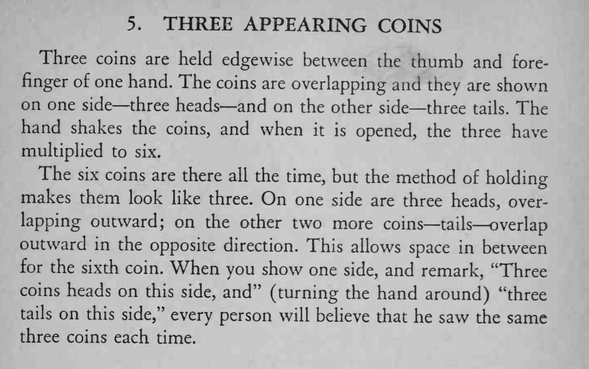

一只手捏着三枚硬币，正反两面各看一遍都是三枚；把手一抖再摊开，三枚竟变成了六枚。
叠放角度要精确；正反两面各看一次就收，别让观众盯着找破绽。

Three coins are held edgewise between the thumb and forefinger of one hand. The coins are overlapping and they are shown on one side— three heads— and on the other side— three The tails. hand shakes the coins, and when it is opened, the three have multiplied to six. The six coins are there all the time, but the method of holding makes them look like three. On one side are three heads, overlapping outward; on the other two more coins— tails overlap outward in the opposite direction. This allows space in between for the sixth coin. When you show one side, and remark, "Three coins heads on this side, and" (turning the hand around) "three tails on this side," every person will believe that he saw the same three coins each time.